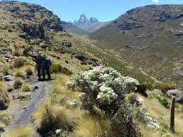
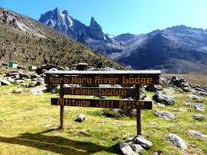
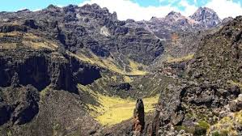
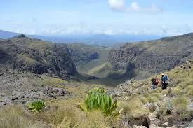
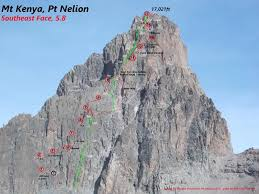
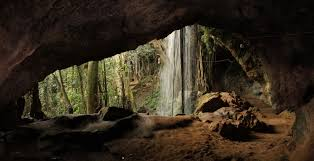

Conquer Africa's second highest peak - 5,199 meters of breathtaking adventure and stunning alpine scenery

Most popular and scenic route. Approaches from the north with gradual ascent, beautiful alpine scenery, and excellent acclimatization profile.

Fastest route to Point Lenana. Features the famous "Vertical Bog" section and stunning views of the Mackinder Valley.

Most scenic and beautiful route. Features spectacular gorges, lakes, and the dramatic Gorges Valley. Often combined with Sirimon.

Least used but adventurous route. Dense forest sections and challenging terrain for experienced hikers seeking solitude.

For experienced climbers: Batian (5,199m) and Nelion (5,188m). Requires technical climbing skills, ropes, and professional guides.

Historical route combining hiking with cultural significance. Visit Mau Mau caves and learn about Kenya's independence history.
Allow proper time for altitude acclimatization to prevent altitude sickness
Temperatures drop below freezing at night - pack warm layers and good sleeping bag
Always climb with certified guides and porters for safety and local knowledge
Drink plenty of water to combat altitude and prevent dehydration